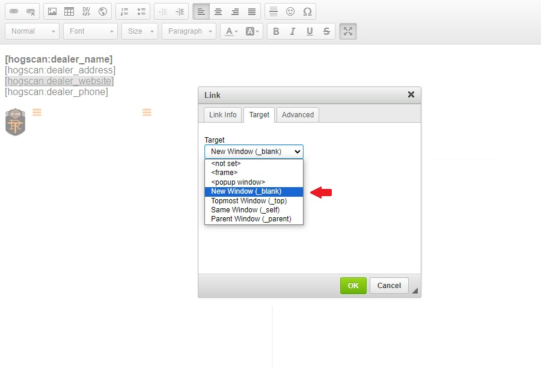

Purpose of this Tutorial
This first section of this page will introduce you to the different HOG[SCAN] tokens. The next two sections will show how to use the inline tokens and the URL link tokens respectively.
The examples used for the tokens are from existing pages on your website. I used them to break down how the tokens are used. You can use them as guidelines for any pages you may create in the future. Click the appropriate link to jump to a specific section.
Introduction to Tokens
Use tokens to minimize redundant typing and the risk of typos.
The Inline Tokens table shows the token you type on the page you are editing and the result that is displayed after you Save the page.
Note; the display will show your unique chapter information. Raleigh's info is shown for display purposes only.
Note2; if you want the octothorpe (number, hash, pound sign) to show in front of your chapter number you need to include it right before the token as shown.
The About Us page on your website is a good example of using Inline Tokens.
Inline Tokens
[hogscan:chapter_name]
Your chapter name
Raleigh NC Chapter
#[hogscan:chapter_number]
Your chapter number
#4356
[hogscan:chapter_city]
Your chapter city
Raleigh
[hogscan:chapter_state]
Your chapter state
NC
[hogscan:dealer_name]
Your dealership name
Tobacco Road Harley-Davidson
[hogscan:dealer_website]
Your dealership website
https://tobaccoroadhd.com
[hogscan:dealer_phone]
Your dealership phone number
(919) 832-2261
[hogscan:dealer_address]
Your dealership address
1126 S Saunders St
Raleigh, NC 27603 US
Each URL Link Token, with the exception of [hogscan:dealer_website], is a pointer to the document or form on national's website. By using these tokens as links you will avoid typo's and your webpage(s) will always point to the current versions of the documents and forms. That is, there is no need to save copies locally.
As shown in the Displays column, you do not want to use the URL Link Token as an inline token. It's not clear to the end user what the link means whereas the words in italics in the Provides column clearly indicate where the link will take them.
The Forms and Documents page on your website is a good example of using URL Link Tokens.
URL Link Tokens
[hogscan:dealer_website]
A link to https://tobaccoroadhd.com
https://tobaccoroadhd.com
[hogscan:charter_url]
A link to the Chapter Charter
https://bit.ly/2FJx5eA
[hogscan:handbook_url]
A link to the Chapter Handbook
https://h-d.com/hogchapterhandbook
[hogscan:member_release_url]
A link to the Chapter Membership Enrollment Form & Release
https://h-d.com/hogchaptermefr
[hogscan:event_release_url]
A link to the Event Release for Adults
https://bit.ly/2OFM7G1
[hogscan:minors_release_url]
A link to the Event Release for Minors
https://bit.ly/2YG62cQ
[hogscan:minors_risk_url]
A link to the Minors Assumption of Risk
https://bit.ly/2uCy1Mr
[hogscan:insurance_injury_url]
A link to the Insurance Injury Report
https://h-d.com/hogchapterir
[hogscan:insurance_open_url]
A link to the Insurance Application for Non-Approved or Open Activities
https://h-d.com/hogchapteranaoa
[hogscan:insurance_parade_url]
A link to the Insurance Application for Parades
https://h-d.com/hogchapterap
It should be noted that any token used in the calendar Body will not be translated when viewing the calendar with the HOG[SCAN] smartphone app.
Using Inline Tokens
An inline token is one that, when translated, flows with the sentence in which it is used. The following two sub-step screenshots show the About Us page. The first in edit mode, the second after the page is saved. Each inline token is underlined to show how it appears when being typed in and then how it displays to the end user.
- An inline token can also be made to be a link. An example of how to do this is shown in step 2.
- Reference the image below which shows the About Us page in 'Edit' mode. The tokens are typed in-line and when the page is saved, the end user sees the translated token.
- Reference the image below which shows the saved About Us page as it appears to the end user.
- The token,
[hogscan:dealer_website], is a special token. Not only does it display your dealerships website when used inline, it can also be used as a clickable link to take the end user to that website.
Unless you, or a previous webmaster, made a change an example of this token being used both ways can be seen in the Our Sponsor block in the footer of each of your website pages.
The following sub-steps will walk through how to use it both ways.
- Login to your website and scroll down to the footer. (Referencing the image below, notice the URL link to your dealerships website in the "Our Sponsor" block.)
Hover over the block and you will see a cog icon. Click on it and then click "Configure block" when it expands.
- Referencing the image below, the block opens in Edit mode and shows four inline tokens. The following sub-steps will show how make the
[hogscan:dealer_website] token a link.
- Referencing the image below, highlight the token by rapidly clicking three times with your mouse button. (Make sure to include the opening and closing square brackets.)
When the token is highlighted, click the "Link" icon in the editor ribbon.
- Referencing the image below, after clicking the Link icon the Link pop-up appears.
The Link Type is URL
The protocol is set to
<other> (If you were initially setting up a new link it defaults to http://. It is changed here and set to <other> because URL Link Tokens already include the https:// protocol.)
- Referencing the image below, when an end user clicks on the dealership link we want it to open in a new window. Here's how to accomplish that.
Click the Target tab and reference the next sub-step.

- Referencing the image below, after clicking the Target tab there is a 'Target' dropdown.
If this were the first time setting this up it would default to
<not set>. You would click the down carat to expand it and select New Window(_blank)
For this tutorial, click the Cancel button to exit without making any changes. (If this was for a new page you would instead click the OK button.) 
- Click your browser's back button to leave Edit mode.
If this were a new page you would scroll to the bottom of the page and click the Save button to save the changes for your new page.
Using URL Link Tokens
The Forms and Documents page shows good examples of accessibility and use of the URL Link Tokens. You can read more about accessibility in the HOG[SCAN] WYSIWYG Editor tutorial.
Briefly, it is clear to the end user where they will go, or what they will see, when they click any of the links.
- The image below shows the Forms and Documents page.
- Reference the image below to see the links when the Edit tab is clicked.
(The next two sub-steps walk through how this page was edited/setup.)
- Referencing the image below, click three times in rapid succession to access the Link pop-up.
This is currently set but if this were a new page and you were creating a link for the 'Chapter Charter' you would expand the Protocol dropdown by clicking the down carat and then selecting
<other>. This is because the URL Link Token already has the https:// protocol.
In the URL box, fill in the appropriate URL Link Token. Refer to the URL Link Tokens table in the first section for a list of available tokens.
Click the 'Target' tab
- The Target dropdown is expanded and
New Window(_blank) is selected. This option is chosen so that when an end user clicks the link it will open in a new browser tab.
Since we are not changing anything on this page, click the Cancel button to leave. (If this were a new link you were creating on a new page you would click the OK button.)